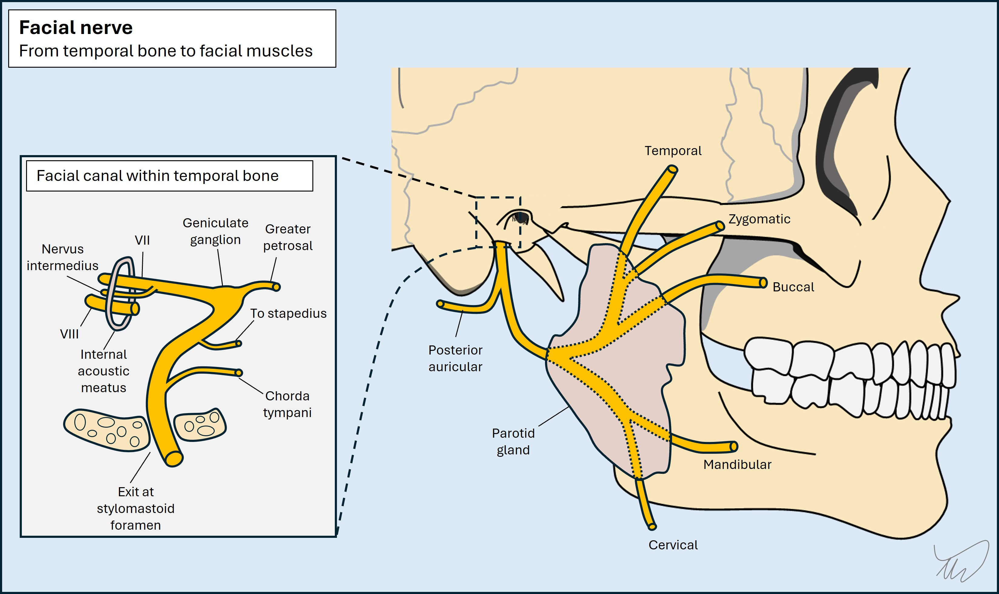

Case 20 - Facial twitching
Where is the lesion?
This patient is having paroxysmal attacks which feature repeated hyperkinetic movements affecting one side of the face only - and nowhere else in the body.
There is a differential for these movements and we need to first consider what they are, because the localisation of a responsible lesion depends on this.
They are clonic contractions (i.e. rapidly repeated, and brief rather than sustained) and involve muscles involved in facial expression - the same muscles we test when we examine patients. They include frontalis (eyebrow elevation), orbicularis oculi (eye closure) and the various muscles involved in cheek movements such as the zygomaticus muscles.
These all share a common innervation source: the facial nerve (VII). The facial nerve nucleus is in the pons. The upper motor neuron (UMN) input to this is a little complicated. The upper muscles (forehead, eye closure) get bilateral UMN input, and hence are spared in UMN lesions but weak in lower motor neuron (LMN) one). The lower muscles (e.g. for smiling) receiving input from the opposite hemisphere only so are weak in both UMN and LMN lesions.

The patient’s attacks do not involve jaw contraction (masticatory muscles: trigeminal nerve [V]), tongue movement (hypoglossal nerve [XII]), eye (extraocular muscles [III, IV and VI]) or neck movements (accessory nerve [XI]), and the limbs are unaffected (spinal cord).
In summary - we are dealing with a unilateral, motor-only, hyperkinetic problem involving muscles innervated by the right facial nerve.
The problem may originate from the left hemispheric motor cortex (the right hemisphere wouldn't explain this as the lower half of the right face is involved), or the descending corticobulbar tract to the facial muscles somewhere along its path, including corona radiate or capsule.
It could also be due to a lesion in the brainstem, or the facial nerve somewhere between its origin in the pons and the target muscles – but upstream of the point where the nerve splits into five segments (temporal, zygomatic, buccinator, mandibular, cervical) given multiple of these are active in these movements. The intracranial and extracranial path taken by the right facial nerve are shown below.


To localise this we need to consider the various causes of involuntary facial movements, and consider where lesions might arise that could produce them.
SeizuresFocal motor seizures are a consideration in any patient with paroxysmal, stereotyped, focal hyperkinetic movements. Clonic twitching movements of the face can be seen. Despite bilateral forehead and orbicularis oculi muscles, unilateral contraction of the face contralateral to the seizure focus can be seen - interestingly, this can spare the ipsilateral side, even though it receives input from the ipsilateral cortex.
Seizures imply a cortical lesion, and in this case clonic movements would implicate the contralateral motor strip ‘face area’. Other features that might suggest seizures include:
While these might suggest seizures, they may not be present – seizures don't have to spread, generalise or affect awareness - so their absence here does not mean these automatically cannot be seizures. However, although it is possible that the patient’s movements are unilateral clonic seizures affecting the face alone, this would be unusual.
Hyperkinetic facial movement disordersBroadly speaking this means 'anything else' that isn't epilepsy-related or a consequence of something more elementary, such as grimacing in response to pain. This is a broad topic but we will review core disorders and see if any fit here.
Hemifacial spasmHemifacial spasm (HFS) is due to paroxysmal hyperactivity in the facial nerve driving repetitive contractions in the ipsilateral face. The name is confusing as 'spasm' often implies sustained contraction, but these are clonic, not tonic. HFS begins with episodes of intermittent repetitive eye closure and progresses over time to affect a broader range of unilateral facial muscles, including forehead and cheek. Eyebrow elevation is characteristic (the 'other Babinski sign'). Attacks also come during sleep, and are not painful.
However, they are disruptive - binocular vision is obstructed intermittently, making focusing difficult (e.g. reading). They are also socially and cosmetically problematic, and can produce embarrassment and stigma.
A variety of lesions can produce HFS. In some cases there is no lesion evident (idiopathic HFS). When lesions are present they generally affect the proximal facial nerve fascicles within the pons, or the root exit zone (REZ) at the cerebellopontine angle (CPA). When the cause is due to a lesion within the pons there is sometimes facial weakness associated but more peripheral lesions often don't cause weakness (but can do).
The contractions are thought to arise due to ephaptic transmission – direct axon-axon transmission laterally across membranes, bypassing the synapse. The mechanism is the same as what happens in trigeminal neuralgia, which has similar causes.
Hemifacial spasm sounds plausible here. It is a clinical diagnosis – there are no diagnostic criteria and there are no tests to ‘prove’ it, although imaging can look for culprit lesions which may support the diagnosis and explain why HFS has developed.
Let's briefly review alternative options in case any fit better.
Orbicularis oculi myokymiaThis is benign and common. The eyelid flickers but not to the point of causing eye closure or affecting vision. It comes on with stress, sleep deprivation or after coffee. You may have had it - I often do. It tends to go away on its own and is not likely to represent disease unless it progresses to involve other muscles. The patient’s movements are too diffuse for this.
BlepharospasmThis is a dystonia – repetitive/sustained contractions causing abnormal movements or postures (in this case, expressions). People experience bilateral contractions of orbicularis oculi, corrugator and frontalis muscles which can obstruct vision. This patient doesn't have this.
Oromandibular dystoniaThis is another dystonia affecting the mouth, jaw and also tongue and facial muscles. The contractions are bilateral and sustained, and can disrupt speech and lead to mouth and tooth injuries. The movements here do not fit with oromandibular dystonia.
Orofacial dyskinesiaThis is a vague term meaning ‘disordered movement’, so could apply to any of the above, but dyskinesia as a term usually implies movements as a drug side effect. Here it refers quite specifically to involuntary, random movements of the face, mouth, tongue and sometimes jaw, e.g. writhing, pouting or chomping. It’s best-known as a side-effect of long-term antipsychotic medication (tardive dyskinesia). The movements would not be unilateral, and there is no relevant exposure, so this case doesn’t sound like dyskinesia.
Facial ticsMotor tics are stereotyped, repetitive movements. They may be simple (a single muscle or a few), or complex (a more involved, sometimes multi-step movement). They're usually developmental though can be acquired in adulthood. Tics are not completely involuntary unlike other movement disorders (e.g. dystonia, tremor) – people usually feel an urge to make the movements and can suppress them for a little while until the urge overcomes them.
People can have facial tics which might be one sided, sometimes occurring in a flurry - but she has no urge, cannot suppress them, and 30 seconds of continuous repetitive movements would be unusually long.
Hemimasticatory spasmThis is a hyperkinetic motor disorder analogous to hemifacial spasm but with different muscles involved innervated by the trigeminal – producing spasms in the jaw, which can produce injuries. It's clearly not this.
SynkinesisThis is a late complication of facial palsy arising during the healing phase - aberrant connections sprout between branches of the facial nerve, and voluntary contraction in one area leads to simultaneous contraction in another. The typical pattern is eye closure during eating, speech or smiling (oculo-oral synkinesis). The movements are not spontaneous – they are synchronous with voluntary movements. This doesn't fit, including no prior facial palsy.
Functional movement disorderFunctional movement disorders are common, involuntary, but not due to physical damage. Various ones involve the face with different patterns, including repetitive or sustained contractions. They are often unilateral. Various patterns exist, such as the corner of the mouth being pulled down and laterally by platysma overactivity (visible in the neck), with jaw deviation to the same side.
Unilateral facial spasms can arise. When these cause eye closure the contralateral eyebrow may elevate – in contrast to the ‘other Babinski sign’ in which the same eyebrow elevates, as seen in HFS - and a good marker that the issue is not functional, as in our patient. Ability to distract facial movements - if they occur during the examination - is another helpful sign of a functional cause.
Our patientWith the pattern – contractions of facial-nerve innervated muscles, only on one side, escalating over weeks, now happening many times daily, and with no suggestion of other problems (e.g. altered awareness, spread into other regions), and with the 'other Babinski sign' present, the best clinical diagnosis is hemifacial spasm.
There may be no detectable lesion, but if there is one, it could be affecting the facial nerve nucleus or fascicles in the pons, or the nerve as it exits the pons. It is less likely to be due to a more peripheral lesion along the path of the nerve.
Of these options, the lack of other features makes the root exit zone (REZ) a better suspect for a lesion site. A pontine lesion might feature other problems - for example co-existing VI palsy, internuclear ophthalmoplegia or ataxia - while a more peripheral nerve lesion might produce facial weakness in addition to hemifacial spasm.
The next question is considering what type of lesion this might be.
What is the lesion?